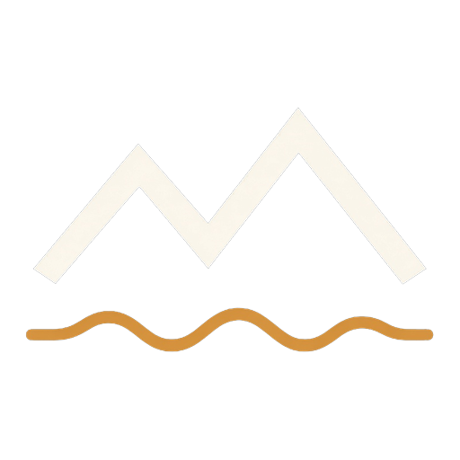
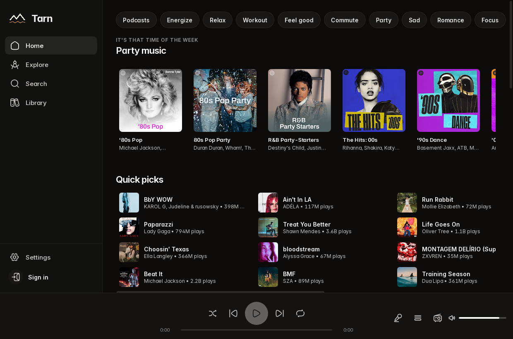
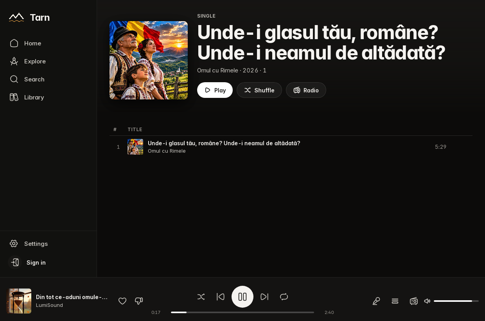
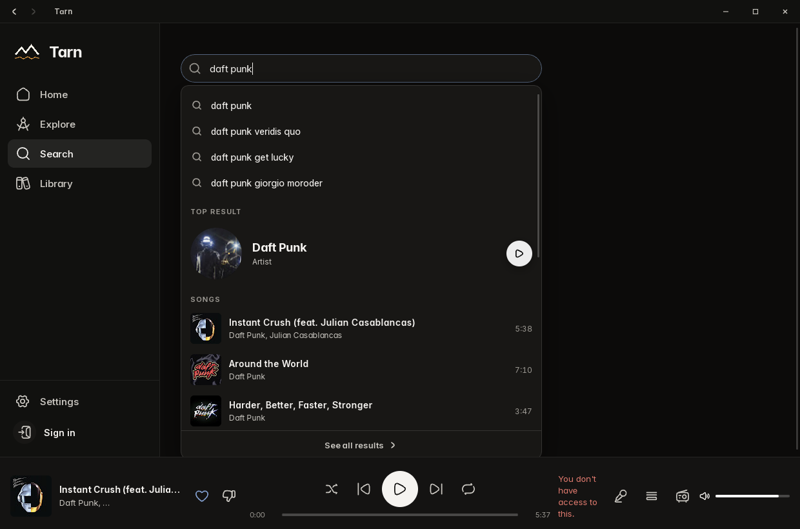

TarnTarn is a fast, self-contained player for Linux, Windows, and macOS. Sign in with Google if you want — it works without an account too.



Audio is decoded in-process. A current yt-dlp is bundled and kept up to date. You don't need ffmpeg or any other tool.
Closing Tarn remembers the track and position, the queue, volume, shuffle and repeat, and the window itself.
Tarn is licensed under the GPL-3.0. Built with Tauri, Rust, and Svelte. Updates are signed and offered in the app.